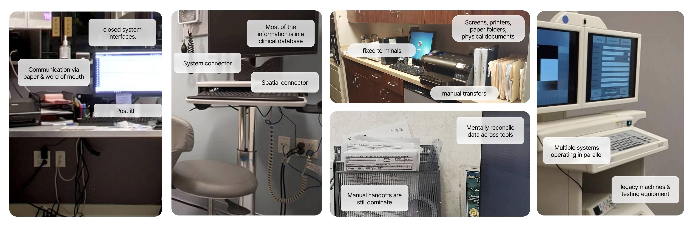

Parameter
Secure AI health app that transforms complex personal health data into clear insights.
Tools


Parameter explores how personal health data could become easier to interpret and use for preventative care. The project focuses on organizing lab results, genetic information, and clinical records into a single system that highlights patterns, signals, and actions.
The goal was not to replace medical professionals, but to help people better understand their own health data so they can ask better questions and make more informed decisions.
How might health data become easier to interpret and act on?
Easy to access, hard to understand
Personal health information is scattered across many systems. While data is increasingly accessible, most tools fail to identify which signals matter, explain how metrics relate to one another, or help people understand what actions support preventative health.
Turning health data into clear signals
Parameter organizes health information around signals, trends, and insights instead of dense dashboards. Data from wearables, lab reports, and medical history is consolidated into one interface and revealed progressively as users explore.
AI summaries highlight patterns and relationships between metrics so users can quickly understand what matters and take action on their health.
One interface for all personal health records
Navigating complex systems
The project began by examining how people currently encounter their health information across clinical portals, lab reports, and consumer apps.

Fragmented clinical workflows
Clinical environments rely on legacy machines, fixed terminals, paper documents, and isolated databases. As a result, information moves through manual transfers and disconnected systems, requiring both patients and providers to piece together records across multiple tools.

Studying how people currently manage health data
To understand the current landscape, we looked at how health information is collected, stored, and experienced across clinical and consumer systems.
Patients often receive lab results, reports, and summaries without clear explanation of how metrics relate to one another or what they mean in the context of their lives. The challenge is turning medical records into information people can actually use.

Validating early concepts
Following the interviews, we began exploring potential interface directions through rapid sketching and concept development. Multiple ideas were generated to test different ways health information could be organized, visualized, and navigated.
These early explorations focused on how signals, timelines, and contextual explanations might appear within the interface. Iterating quickly on these concepts helped surface which approaches felt clearer and more intuitive for presenting complex health information.
Health data lives in separate tools
We found that most digital health tools are designed around a single type of information rather than a focus on comprehensive care. Genetic testing platforms focus on DNA insights, fitness apps track activity and biometrics, medical portals store clinical records, and telehealth services handle appointments and consultations.
Each system works well within its own category, but they rarely communicate with one another. As a result, people must navigate multiple platforms to understand their health, manually piecing together information that could be far more meaningful if it were connected.
Access to records is not understanding
Simplifying how people understand their health
Scattered
Health information lives across disconnected systems.
Hard to understand
Results lack context and meaningful explanation.
High friction
Understanding your health requires navigating multiple tools.

Viewing health metrics in context
These screens explore how lab results could be presented in a clearer and more contextual way. Instead of showing isolated numbers, the interface places each metric within a timeline so users can see how values change over time.
Additional explanations help translate medical terminology into plain language, giving users a better understanding of what each result represents and why it may matter.

Bringing multiple lab results into one view
The interface organizes multiple health metrics into a single view so users can quickly scan key indicators such as cholesterol, inflammation markers, and cardiac signals.
Each metric includes a clear status indicator, historical data points, and supporting context. This structure helps people understand not just individual test results, but how different indicators relate to one another within their overall health profile.
An interface that responds to changing needs
Adaptive interface
Health information is not static, and the interface should not be either. As new data is added, the system adjusts what it surfaces and how information is organized. Instead of presenting the same dashboard at all times, the interface prioritizes what is most relevant in the moment, helping users focus on changes, emerging patterns, and questions worth exploring.
This creates a more flexible environment where the experience evolves alongside a person's health journey.
Document import
Health information often arrives as PDFs, lab reports, or scanned documents that are difficult to search or interpret. The document scanner allows users to capture these records directly within the system.
Once uploaded, key information can be extracted and organized alongside existing health data. This helps transform static reports into structured inputs that contribute to a clearer view of a person's health history.
AI health assistant
The AI assistant provides a conversational way to interact with personal health information. Instead of searching through reports or navigating multiple screens, users can ask questions about symptoms, lab results, or health topics directly within the interface.
The assistant helps surface relevant information, provide explanations, and guide users toward deeper insights within their data. This creates a more natural way to explore and understand complex health information.
Connecting conversation, results, and progress
The interface brings together multiple ways of interacting with personal health information. A conversational assistant helps users ask questions and explore their data, lab results are visualized as signals and trends over time, and goal tracking supports everyday health decisions.
Rather than presenting isolated records, the system connects these elements into a single environment where people can review results, ask questions, and track progress as their health evolves.
Design is essential in understanding complex experiences
Our takeaways
Designing for complexity
Working on Parameter reinforced how much careful structure matters when translating medical records, lab results, and health signals into something a person can actually understand.
Designing for trust
Health interfaces need more than clean visuals. They need to communicate clearly, reduce ambiguity, and help users feel confident about what they are seeing and what questions to ask next.
Connecting fragmented systems
The most valuable opportunity was not creating another isolated tool, but imagining how different records, conversations, and metrics could come together into one more coherent experience.